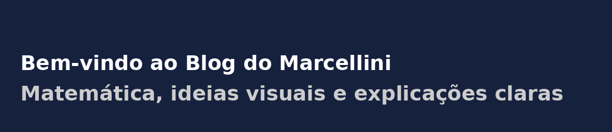

import numpy as np
import matplotlib.pyplot as plt
x = np.linspace(0, 2*np.pi, 100)
plt.plot(x, np.sin(x))
plt.title("Função Seno")
plt.show()
← Voltar para a Seção de Quarto 📄
← Voltar para a Seção de Programação 👨💻

Quarto Markdown é uma evolução poderosa do Markdown tradicional, projetada especialmente para comunicação científica e técnica. Ele permite integrar:
Com Quarto, você pode gerar:
| Característica | Markdown (.md) | Quarto (.qmd) |
|---|---|---|
| Formatação básica | ✅ | ✅ |
| Suporte a HTML | ✅ | ✅ |
| Equações LaTeX | ❌ (limitado) | ✅ (total) |
| Blocos de código executável | ❌ | ✅ (Python, R, Julia etc.) |
| Geração de PDF/EPUB/Slides | ❌ | ✅ |
| Suporte a YAML | Limitado | ✅ (para metadados e configuração do projeto) |
| Público-alvo | Geral | Cientistas, educadores, engenheiros etc. |
✅ Resumo: Markdown tradicional é ótimo para blogs e anotações simples. Já o Quarto Markdown é ideal para projetos técnicos e científicos com código, matemática e visualizações.
# Título Nível 1
## Título Nível 2
### Título Nível 3**negrito**, *itálico*, ***negrito e itálico***negrito, itálico, negrito e itálico
> A matemática é a linguagem com a qual Deus escreveu o universo. — GalileuA matemática é a linguagem com a qual Deus escreveu o universo. — Galileu
- Item A
- Item B
- Subitem B.1Visualização:
Item A
Item B
1. Primeiro
2. Segundo[Quarto](https://quarto.org)
{width=20%}
| Nome | Idade | Cidade |
|----------|-------|-----------|
| Ana | 25 | Recife |
| Bruno | 30 | Natal || Nome | Idade | Cidade |
|---|---|---|
| Ana | 25 | Recife |
| Bruno | 30 | Natal |
A famosa identidade de Euler: $e^{i\pi} + 1 = 0$A famosa identidade de Euler: \(e^{i\pi} + 1 = 0\)
$$
\int_0^\infty e^{-x^2} dx = \frac{\sqrt{\pi}}{2}
$$\[ \int_0^\infty e^{-x^2} dx = \frac{\sqrt{\pi}}{2} \]
import numpy as np
import matplotlib.pyplot as plt
x = np.linspace(0, 2*np.pi, 100)
plt.plot(x, np.sin(x))
plt.title("Função Seno")
plt.show()
Quarto oferece callouts para destacar informações importantes:
::: {.callout-note}
Esta é uma nota informativa.
:::Esta é uma nota informativa.
::: {.callout-tip}
Dica: use `{.callout-tip}` para boas práticas.
:::Dica: use {.callout-tip} para boas práticas.
::: {.callout-warning}
Atenção: certifique-se de que o código esteja corretamente indentado.
:::Atenção: certifique-se de que o código esteja corretamente indentado.
::: {.callout-caution}
Cuidado: alterações em arquivos `.qmd` podem sobrescrever `.md` gerados.
:::Cuidado: alterações em arquivos .qmd podem sobrescrever .md gerados.
::: {.callout-important}
Importante: Quarto substitui RMarkdown com recursos mais modernos!
:::Importante: Quarto substitui RMarkdown com recursos mais modernos!
Neste exemplo, mostramos uma forma de exibir código em Python de forma estática, ou seja, sem que ele seja executado.
python
::: {.callout-note collapse=true title="💡 Título: Código estático com realce de sintaxe e conteúdo colapsado"}
```python
# Exemplo de cálculo de área de um círculo
import math
raio = 5
area = math.pi * raio**2
print(f"A área do círculo é {area:.2f}")
```
:::Visualização:
# Exemplo de cálculo de área de um círculo
import math
raio = 5
area = math.pi * raio**2
print(f"A área do círculo é {area:.2f}")Quarto Markdown é a solução ideal para produção de documentos reprodutíveis, bonitos e interativos, combinando código, matemática e explicações.
Explore mais:
← Voltar para a Seção de Quarto 📄
← Voltar para a Seção de Programação 👨💻
Blog do Marcellini — Explorando a Matemática, a Estatística e a Física com Rigor e Beleza.